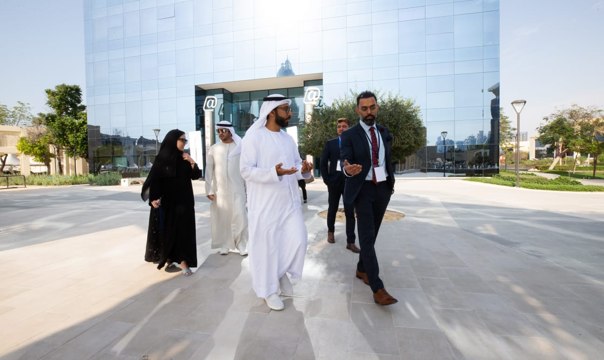
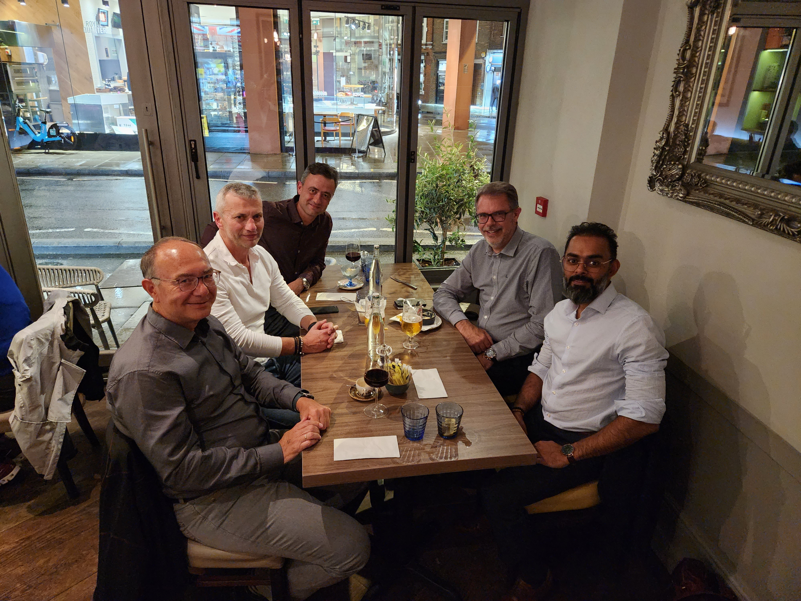

Chapter Four
Breaking Into the Room
Huawei & Motorola · Proving Credibility Twice
Audio only"Competence opens the door, but credibility keeps you inside."

Breaking into Fortune 500 procurement was never going to be a matter of credentials alone. Credentials got you the interview. What kept you in the room — and eventually at the table — was something harder to quantify: the ability to demonstrate that you understood not just the process, but the politics, the culture, and the unspoken hierarchies that determined whose voice actually mattered.
At Huawei, I entered a system that was simultaneously one of the most disciplined and most complex corporate cultures I had encountered. Chinese management philosophy layered over Gulf business practices, all operating under the constant pressure of regulatory scrutiny and geopolitical tension. For a Pakistani professional in the Gulf, this meant proving credibility twice: once as a competent procurement specialist, and again as someone who could navigate the cultural minefield without tripping.
Being an outsider did not, by itself, make me more perceptive. It made listening difficult to avoid. Before I could ask people to trust my judgment, I had to understand what they feared losing, what they were expected to protect, and which conversations could happen only after trust had been earned. That was the work beneath the work: finding a way to contribute without pretending the differences in the room did not exist. Anyone who has had to establish credibility twice knows the cost of that attention.
Procurement as Strategic Intelligence

The conventional view of procurement — the view that most organizations still hold — is that it is a cost center. Your job is to get the best price, manage suppliers, and keep the operations running without disruption. It is fundamentally tactical. I rejected this view from my first week.
What I saw at Huawei was that procurement sat at the intersection of every strategic function: finance, operations, compliance, risk, and stakeholder relations. The procurement team knew things before the strategy team did — which suppliers were struggling, which markets were tightening, which regulatory changes were coming. We had intelligence. What we lacked was the organizational authority to use it.
Building the Case for Elevation


Words on the work
What sets Zeeshan apart is his ability to balance analytical thinking with strong interpersonal skills — he does not only get the numbers right but also build meaningful relationships with internal stakeholders and external partners alike. He is that one leader who I always want to walk with.
My approach was methodical. I did not argue for procurement's strategic importance — I demonstrated it. I restructured supplier evaluations to include risk metrics that the board cared about. I connected procurement data to revenue forecasts, showing that supplier concentration was a strategic risk, not just an operational inconvenience. I framed every conversation in the language of the C-suite, not the language of the purchasing department.
Within eighteen months, the perception shifted. Procurement went from a function that executives tolerated to one they consulted. Staff who had been hired as transactional buyers were beginning to operate as strategic partners. Some of them would eventually move into Director and VP-level roles — a trajectory that I consider one of the most meaningful outcomes of my career.
The Motorola years reinforced these lessons through a different cultural lens. Where Huawei demanded adaptation to Chinese corporate hierarchy, Motorola operated in a more decentralized, Western structure. The compliance requirements were different, the stakeholder dynamics were different, but the underlying principle was the same: governance is not overhead. It is infrastructure.